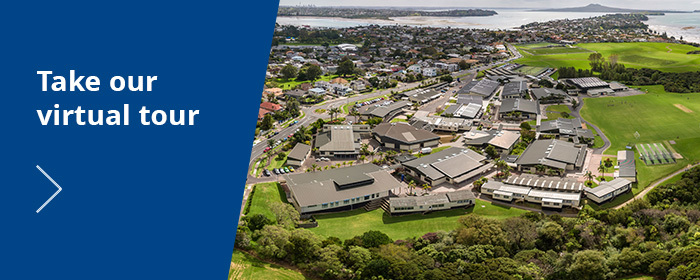

Welcome to Introducing Macleans
This is a guide to Macleans College in Bucklands Beach, Auckland. It is for students and parents who would like to know more about the school.
Macleans College is a secondary school for students in years 9-13, and is widely regarded as one of the best schools in New Zealand.
Here you can find out about how the school works, what students study, and some extra-curricular activities.
Photo of the school campus from the school website:

Location
Macleans College is at 2 Macleans Road, Bucklands Beach, Auckland. You can find it on Google Maps or take a look at the school's campus tour.
Tiger Maths
I have also made another website, Tiger Maths, which is a resource for various mathematical activities.
For instance you can play interesting maths games, create and host live Mathex competitions, and more!